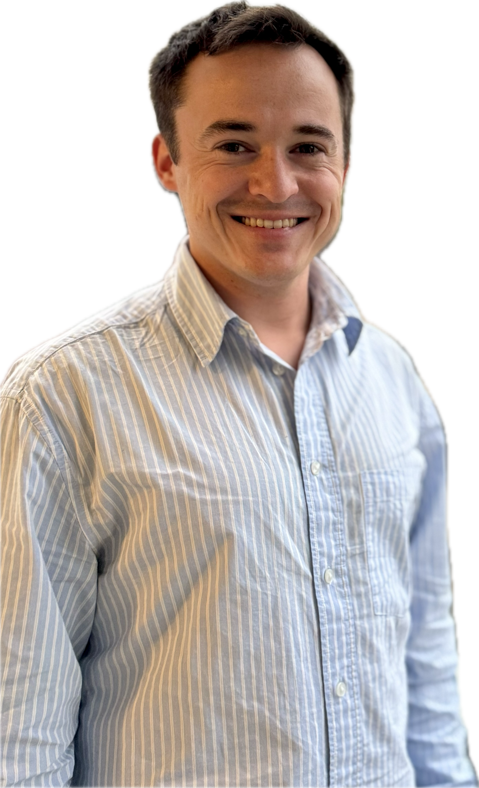

Felix Wagner
PostDoc, Superconducting Quantum Bits and Sensors
Universal quantum computing will accelerate many computational tasks and create new opportunities, and superconducting circuits are one of the prime platforms for its realization. In these devices, a quantum state is captured in the field of a micrometer-scale on-chip SQUID-capacitor loop. The state must be protected from spurious interactions: quasiparticles and defects, photon backgrounds, and others. Together with the team of the Quantum Computing Hub of ETH Zurich and the Paul Scherrer Institute, we study the origin, dynamics, and mitigation strategies of these error sources.
Previously I did my PhD at the Institute for High Energy Physics of the Austrian Academy of Sciences, where I worked on the direct detection of dark matter, the mysterious substance that makes up 85% of all matter in our universe and whose nature we still do not understand. Low-temperature dark matter detectors and superconducting circuits share common challenges in their microphysics, backgrounds, control, and fabrication, creating an opportunity to simultaneously advance several of the biggest open questions in modern physics.
Read more about my research and specific projects, or browse through my publications.
